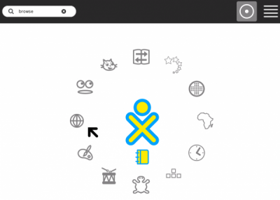

Installing Activities
You can install new and different Activities, which you can download and install from a web site, your school server, a USB storage device, or an SD card.
There are two ways to install new activities:
- Use the Browse Activity to download an Activity and then use the Journal Activity to install it.
- Use the Terminal Activity to install an Activity directly from a USB device with a typed command.
Installing from a web site
- In the Home view, click Browse.

- At the top of the page, type wiki.laptop.org/go/Activities and then press Enter.
- On the Activities page, look for a new Activity such as the Puzzle game.

- Click the name of the file that you want. Activity files usually end in ".xo".

- On the next page, click the download link.

- When the download is complete, click "OK".

- In the Frame, click the Journal to launch the Journal Activity.

- From the Journal Activity, click the .xo file to preview it.
- In the preview page, click the circle with a square in it.
This installs and starts the Activity. It adds a new icon to the Activities list mode in the Home view.
Enjoy your new Activity!

Installing an activity from a USB storage device
- Insert the USB device.
- Start the Terminal Activity from the Home view.
- At the prompt, type:
sugar-install-bundle /media/<USB device name>/<filename.xo>
(Substitute the actual name of the USB device in place of "<USB device name>" in the command, and the actual path and filename of the .xo file in place of "<filename.xo>".)
Sugar will install the Activity.
Tip: To determine the name of your USB device, you can go to the Journal Activity and read the name from the icon in the bottom left corner of the screen.
Installing a set of Activities
Activities are downloaded separately from the base Sugar user interface. To install a set of Activities on an OLPC XO-1 laptop:
- Download dev.laptop.org/~mstone/customization-2.zip.
- Unzip customization-2.zip onto an empty USB device.
- Create a directory called "bundles" on the USB device.
- Download the activities .xo and .xol files that you want to include. (A sample set of Activities is found at wiki.laptop.org/go/G1G1_bundled_activities#G1G1_deployment.)
- Copy these .xo and .xol files into the bundles subdirectory on the USB device.
- Shut down your XO-1 laptop.
- Insert the USB device into your XO-1 laptop.
- Start up the XO-1 laptop. The set of activities from the USB device are installed automatically.
Author : InstallingActivities
© Aaron Konstam 2008
Modifications:
adam hyde 2008
Anne Gentle 2008
David Farning 2008
Janet Swisher 2008
Morgan Collett 2008
Walter Bender 2008
License : General Public License
Produced in FLOSS Manuals (http://www.flossmanuals.net)